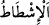
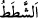
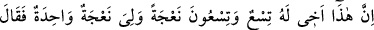
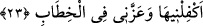
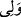
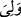
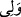
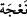

şeklindeki yorumumuz uzlaşmış oldu.
“Birimiz ötekinin hakkına saldırdı.” Yâni zulüm ve cevr etti. Bu, farazi ve Dâvûd’a
tariz kabilinden bir ifâde olup meleklerden birinden gerçekten böyle bir saldırı vâki
olduğu anlamında değildir. Dolayısıyla yalan beyânda bulundukları söylenemez. Çünkü
melekler bundan münezzehtir. Bu bakımdan, -Şerhu’l-Mekâsıd’daki gibi -âyetteki
dâvâcıların, Dâvûd’un odasına bir şeyler çalmak maksadıyla giren iki hırsız olduğu;
Dâvûd’un kendilerini görmesi üzerine de bu dâvâ meselesini uydurdukları şeklinde bir
yorum yapmağa gerek yoktur.
“Aramızda adâletle hükmet, haksızlık etme;” Yâni o halde aramızda adâlet ve
dürüstlük ile hüküm ver; zulmetme. Buradaki (__WORD__) Hakk’ı aşağılayarak haddi aşmak
anlamındaki (__WORD__) kökündendir. Diğer bir ifâdeyle ortaya çıkarmak, haddi aşmak
demektir. Mânâsı, “hükmederken haksızlık yapma!” şeklindedir. Bu, “adâletle
hükmetme” emrini pekiştirmekte olup bu emir ve yasaklardan maksadları, ona
kendilerini acındırmaktır.
“Bize doğru yolu göster, dediler”.
Saldırganı, girdiği bu zulüm yolundan men’edip kendisine adâlet yolunu göstererek
hak yolun ortasına ilet.
23. (Onlardan biri şöyle dedi:) Bu, kardeşimdir. Onun doksan dokuz koyunu var.
Benimse bir tek koyunum var. Böyle iken “Onu da bana ver” dedi ve tartışmada
beni yendi.
“(Onlardan biri şöyle dedi:) Bu,” dinde veya sohbette “kardeşimdir.” Bu ifâde,
hangi konuda anlaşamadıklarını ortaya koyan yeni bir cümledir. Saldırganın, kardeşi
olduğunun vurgulanması, yaptığının son derece çirkin bir davranış olduğunu anlatmağa
hazırlık mâhiyetindedir.
“Onun doksan dokuz koyunu var. Benimse bir tek koyunum var.” (__WORD__) kelimesini
Âsım’ın râvisi Hafs, (__WORD__) şeklinde; geri kalan kurrâ ise aslı üzere, yâni (__WORD__) şeklinde
okumuşlardır. (__WORD__), dişi koyun olup (Türkçede kısrağın aynı anlamda kullanılması gibi)
kadından kinâye olarak kullanılır. Kinâyeli ve ta’rizli sözler ise esas maksad olan
kınamayı daha iyi ifâde ederler. Çünkü kendisine ta’rizde bulunulan şey hakkında bir
bilginin hâsıl olması, iyice bir düşünmeyi gerektirir. Bunu düşündüğü ve yaptığının
çirkinliği kendisi açısından ayân beyân ortaya çıktığında, kendisini daha fazla etkiler ve
daha çok utanıp sıkılmasını temin eder.